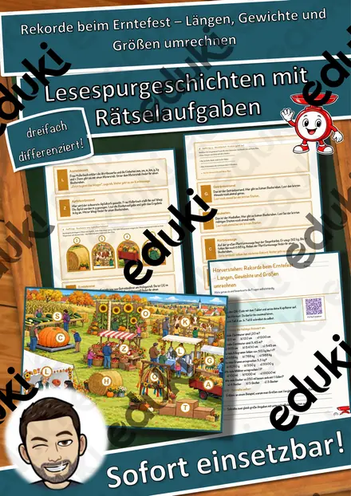
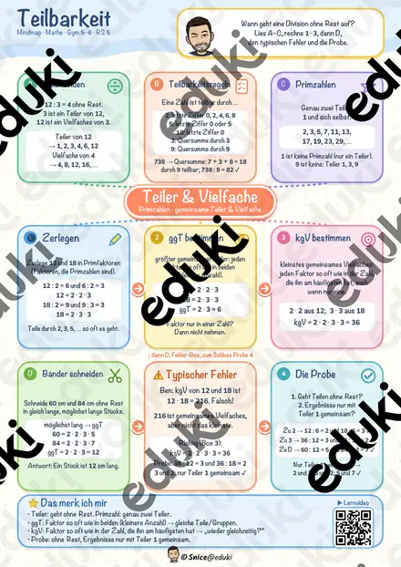

Rekorde beim Erntefest – Längen, Gewichte und Größen umrechnen – Lesespurgeschichte mit Rätselaufgaben (Klasse 5)

Teilbarkeit, ggT & kgV Mindmap + 4 Arbeitsblätter mit Lösungen + Lernvideo (QR) – Teiler, Primzahlen

Materialpaket Geometrische Körper - Steckbriefe mit Formeln - Körper Mathe Geometrie

#edukilights22 Geometrische Körper - Steckbrief Würfel - Mathe - Geometrie - Differenziert #edukilights22

Römische Zahlen Tafelmaterial, Römische Zahlen

Spiel Geometrische Flächen - Ich habe, wer hat?

Einmaleins Materialpaket - Homeschooling (kleines Einmaleins) (auch Homeschooling)

Übungsheft Homeschooling kleines Einmaleins, Klecksaufgaben (auch Homeschooling)
Keine Materialien gefunden – versuch einen anderen Suchbegriff oder Filter.